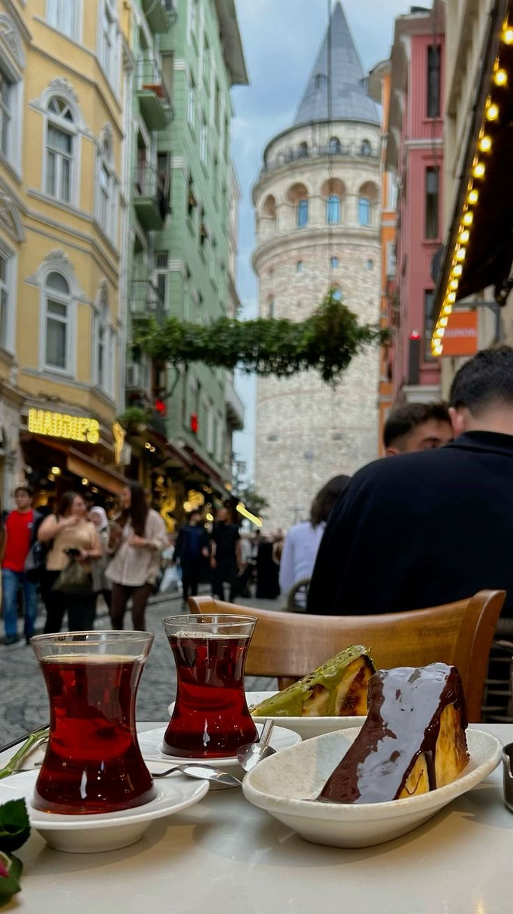

Gallery
Explore the beautiful landscapes, cities, and architecture of Turkey through this curated photo gallery.



Discover Turkey’s most beautiful destinations, rich culture, ancient history, and breathtaking landscapes. Travel through Istanbul, Cappadocia, Pamukkale, Antalya and more.
Explore Turkey DestinationsExplore Türkiye’s most iconic cities and breathtaking landscapes, where history, culture, and natural beauty come together.


Everything you need to know before traveling to Türkiye.

Most travelers can enter Türkiye visa-free or with an e-Visa. Ensure your passport is valid for at least 6 months.

Domestic flights, buses, trains, metros, and taxis make traveling around Türkiye easy and affordable.

Enjoy kebabs, baklava, and Turkish tea. Respect local customs, especially at mosques.

Spring and autumn offer pleasant weather. Summer suits beaches, winter is ideal for snow lovers.
Explore the beautiful landscapes, cities, and architecture of Turkey through this curated photo gallery.